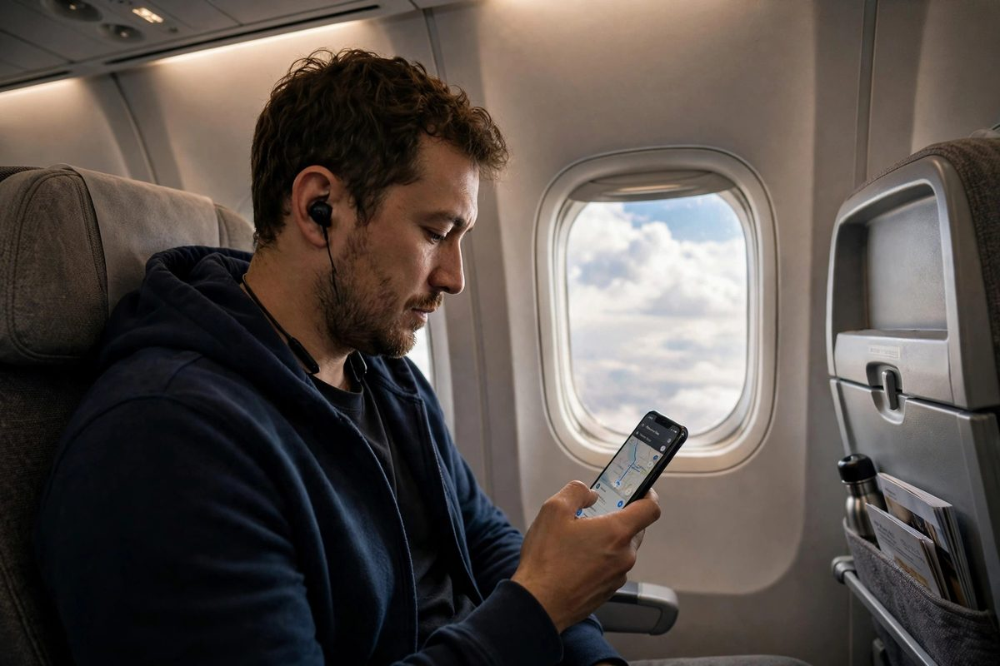

Instagram Videos for Travel: Offline Viewing on Flights and Trips
Prepare Instagram videos for a trip, what works offline, and how to keep your saved content available.
Instagram is not an offline app, and that becomes obvious on a plane or a long train ride through a dead zone. Saved posts need a connection, and the feed will not load without one. With a little preparation, though, you can still take the videos you care about with you. This guide explains what works offline, how to prepare the night before a trip, and what to do when you are back online.
What works offline
The only Instagram videos that play with no connection are the ones saved as files on your phone, which means Reels downloaded through the creator-approved download option, and your own videos in your camera roll. Saved posts, the feed, Stories, and Explore all need a connection, although Instagram may keep a few recently viewed posts in its cache. Do not rely on the cache: it is unreliable and it clears itself without warning.
Prepare the night before
The night before a trip, open the Reels you want to take with you and download the ones that offer the option, on Wi-Fi. Save the rest inside Instagram so they load quickly when you reconnect. Download your own videos from your camera roll if you want to show them to someone, and make sure your phone is charged and you have a power bank. Test one downloaded Reel in airplane mode before you leave, so you know it plays.
Space and battery
Downloaded Reels are small, usually 5 to 40 MB each, so a dozen of them fit easily on most phones. Video playback still drains the battery, so bring headphones and a power bank, and consider downloading audio content too, such as podcasts, which use less battery with the screen off. Keep your brightness low on a plane, because the screen is the biggest battery drain, and close apps you are not using.
When you are back online
When you reconnect, your saved posts and feed will load again, and any posts you saved during the trip will sync. If a downloaded Reel will not play, check that the download finished before you left, and re-download it if necessary. If a saved post has disappeared, the creator probably deleted it, and there is nothing you can do to recover it. As a habit, copy important information from a post, such as an address or a booking reference, into a notes app before a trip, so you are not dependent on a connection to find it.
Roaming and data abroad
Mobile data abroad is where Instagram gets expensive, because roaming charges can be many times higher than at home, and a few minutes of scrolling can cost more than a meal. Before you travel, check your mobile plan's roaming rates and consider buying a local SIM card or an eSIM, which is usually far cheaper. Download the Reels you want before you leave, on Wi-Fi, and turn off mobile data for Instagram in your phone settings, or use airplane mode with Wi-Fi only. Many hotels, cafes, and airports offer free Wi-Fi, but public Wi-Fi is not private, so avoid logging in to sensitive accounts on it. Save the posts you need for the day while you are on Wi-Fi in the morning, and you will not need data while you are out. A little preparation keeps the bill small and the trip enjoyable.
Frequently Asked Questions
Can I watch Instagram offline on a plane?
Saved posts need a connection to load. Downloaded Reels, where the creator allows it, play offline from your gallery.
How should I prepare for a trip?
Download allowed Reels the night before on Wi-Fi, and save posts you want to revisit so they load fast when you reconnect.
Will my saved posts disappear?
No, saved posts stay in your account. If the creator deletes a post, it disappears from your saved collection too.